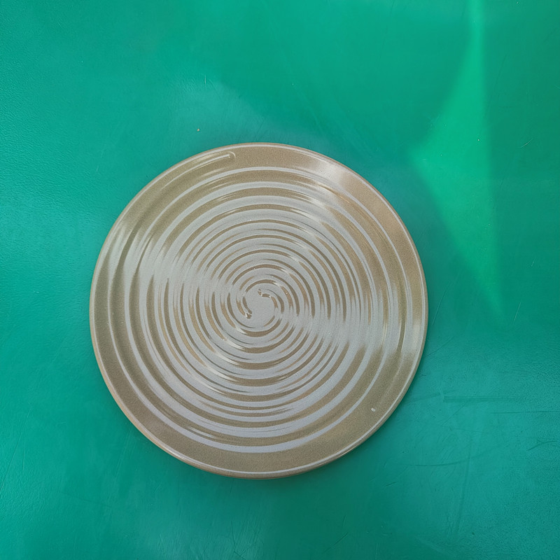
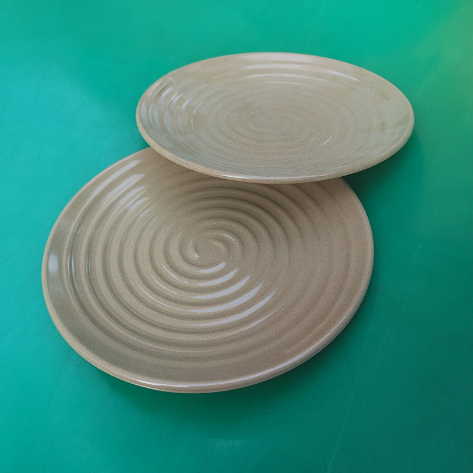
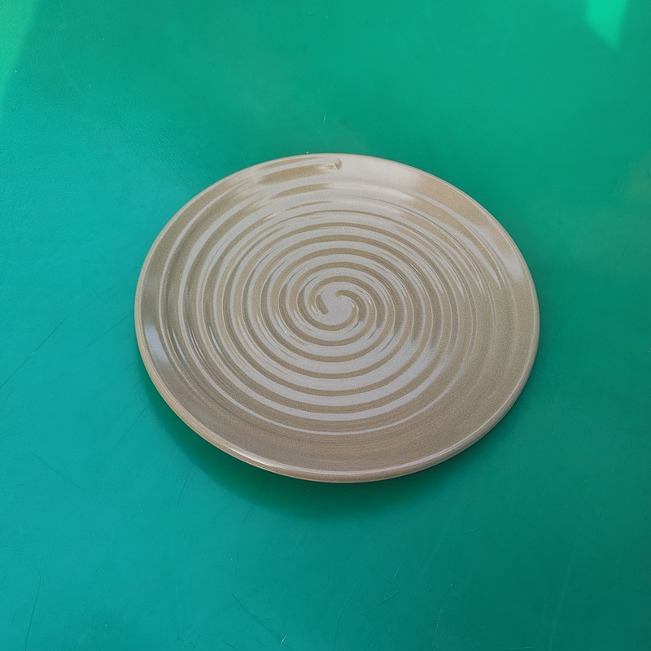
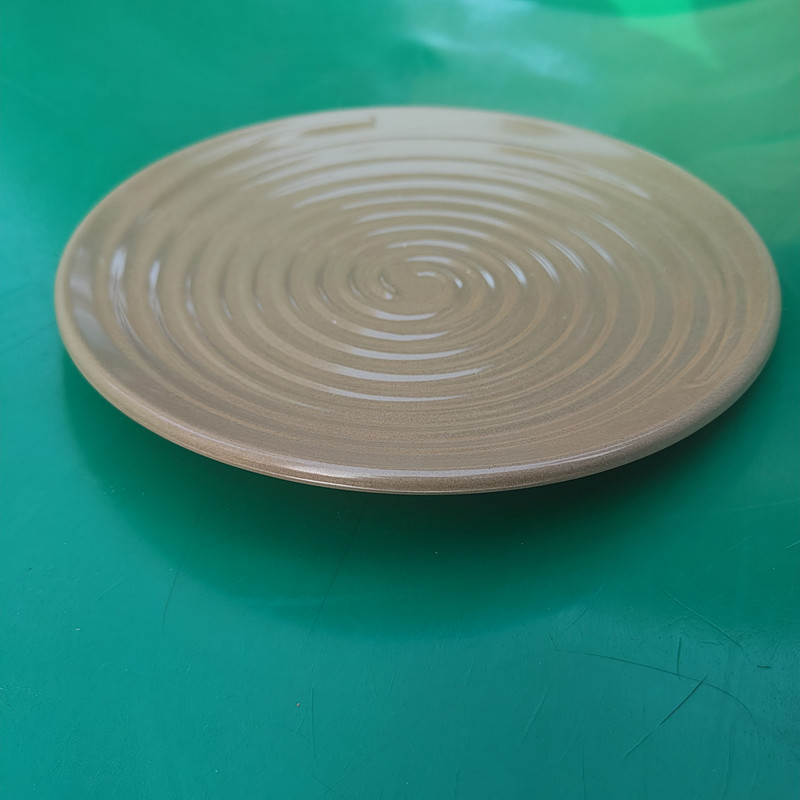
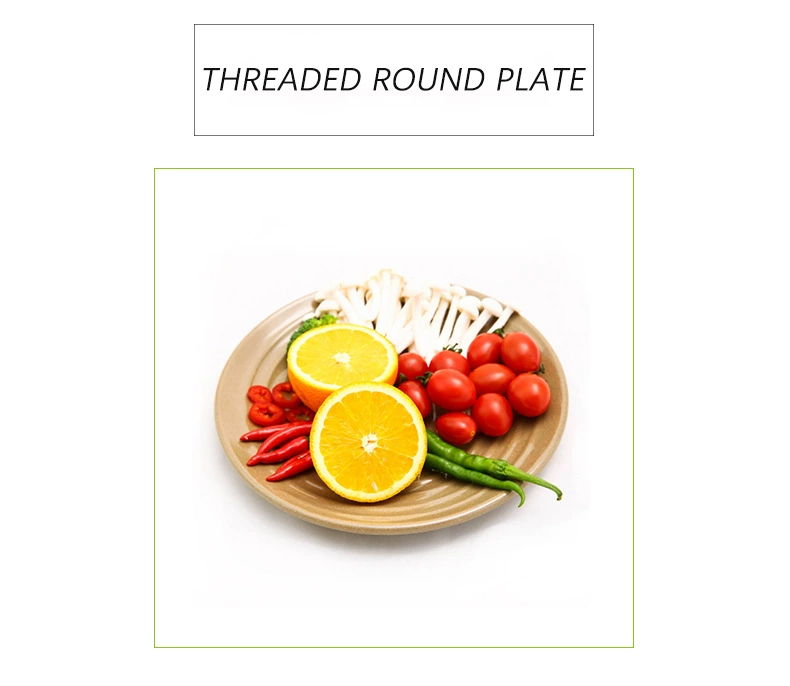

A round dinner plate with a distinctive swirl-textured surface, molded from natural rice husk fiber. The spiral pattern adds grip and a handmade look while staying lightweight, stackable and break-resistant — a stand-out piece for family dining, cafés and retail shelves.
| Model | KXXFD-450-CR |
|---|---|
| Material | Natural rice husk fiber + food-grade starch binder |
| Size | Ø256 × 31 mm (10.1") |
| Weight | 450 g |
| Color | Natural rice-husk color, plus custom colors (Pantone matching) |
| Packaging | Bulk carton or custom single-item box available |
| MOQ | 300 pcs (stock) / 1,000 pcs (custom color or logo) |
| Feature | Swirl-textured surface, lightweight, break-resistant, stackable |
Tell us your color, quantity and branding needs — we'll prepare a tailored OEM/ODM quote within 24 hours.
Send Inquiry